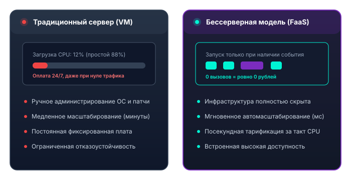

1. Определение бессерверной архитектуры
Бессерверная архитектура (Serverless Architecture) — это модель облачных вычислений, при которой поставщик облачных услуг (AWS, Microsoft Azure, Google Cloud, Cloudflare, Yandex Cloud) полностью берет на себя управление физической и виртуальной инфраструктурой: выделение ресурсов, установку обновлений ОС, сетевое администрирование, обеспечение отказоустойчивости и автомасштабирование.
«Если вам приходится управлять операционной системой, настраивать автоматические перезапуски демонов или планировать размер виртуальной машины на случай пиковой нагрузки — это не Serverless.»
Главный признак Serverless — это возможность для инженера сосредоточиться исключительно на прикладном исходном коде, упакованном в функции (FaaS) или использующем готовые сервисы (BaaS), при этом стоимость ресурсов в состоянии простоя равна нулю (Scale to Zero).
2. История появления Serverless
Чтобы понять мотивацию перехода к бессерверным вычислениям, рассмотрим четыре ключевых этапа развития серверной инфраструктуры в ИТ:
Этап 1: On-Premise (Собственные серверы)
Компании покупали физические серверные стойки в дата-центрах. Закупка оборудования занимала месяцы, требовался штат системных администраторов, а простои оплачивались из кармана бизнеса.
Этап 2: IaaS (Инфраструктура как сервис)
Появление Amazon EC2 в 2006 году. Виртуальные машины стали создаваться за минуты по API. Однако администрирование ОС, настройка балансировщиков и патчинг безопасности всё ещё лежали на инженере.
Этап 3: PaaS & Контейнеры (Docker/K8s)
Heroku и Google App Engine показали прелесть изоляции приложений. Позже Docker и Kubernetes упростили оркестрацию, но кластеры K8s потребовали колоссальных затрат на эксплуатацию и мониторинг.
Этап 4: FaaS и Serverless (Эра функций)
В 2014 году AWS представила Lambda. Концепция атомарной функции, запускаемой по событию, совершила революцию: оплата стала посекундной, а масштабирование — автоматическим от 0 до бесконечности.
3. Ключевые архитектурные принципы
Бессерверные приложения строятся на пяти фундаментальных принципах:
Stateless (Без состояния)
Функции не сохраняют состояние в локальной оперативной памяти между вызовами. Все постоянные данные хранятся во внешних BaaS (БД, S3, Redis).
Event-driven (Событийность)
Код не крутится в бесконечном цикле `while(true)`. Функция «спит» и активируется только в момент поступления зарегистрированного события.
Ephemeral (Эфемерность)
Среда исполнения функции создаётся для конкретной задачи, работает от нескольких миллисекунд до нескольких минут и затем уничтожается.
Scale to Zero
При отсутствии пользователей или входящих запросов в облаке не работает ни один экземпляр функции. Потребление ресурсов равно абсолютному нулю.
4. Инфографика: Традиционная архитектура против Serverless
Сравнение модели постоянного выделения виртуального сервера (Dedicated VM) и бессерверной обработки по требованию (FaaS):

5. Экономика Serverless: оплата за фактические ресурсы
В традиционном подходе компания арендует виртуальный сервер (например, 4 vCPU, 16 ГБ RAM) за фиксированную сумму в месяц (например, $80/мес). Если сервер нагружен всего на 5% (ночью или в периоды спада), оставшиеся 95% оплаченной мощности сгорают впустую.
В Serverless стоимость рассчитывается по формуле:
Большинство платформ (AWS Lambda, Cloudflare Workers, Yandex Cloud) предоставляют щедрый бесплатный уровень (Free Tier): до 1 000 000 бесплатных вызовов функций каждый месяц. Для стартапов, учебных проектов и умеренно нагруженных сервисов это позволяет разрабатывать решения с нулевыми затратами на инфраструктуру.
6. Экспресс-обзор достоинств и ограничений
Ключевые плюсы
- Экономия бюджета: плата строго за факты вызовов.
- Нулевые накладные расходы на DevOps и сисадминов.
- Высокая отказоустойчивость из коробки в нескольких зонах доступности.
- Быстрое прототипирование и развёртывание.
Ограничения
- Холодный старт (Cold Start) при первом вызове.
- Лимит максимального времени исполнения (от 15 с до 15 мин).
- Привязка к API конкретного облачного вендора.
- Сложность сквозной отладки распределённых систем.
Детальный разбор каждого ограничения и методов их компенсации представлен в разделе «Преимущества и недостатки».